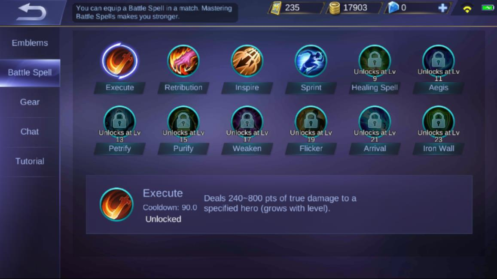
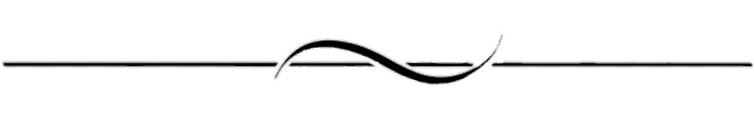

Mobile Legends: Bang Bang
Moonton
Category:
Action Games, Fun Games, Multiplayer Games
Category:
Action Games, Fun Games, Multiplayer Games
Guide to use the battle spell
In this guide, we will list down all the Battle Spells in Mobile Legends and teach you how to use them for what purposes.
You can only choose one Battle Spell in each game, so you need to know which one to pick and how to use them correctly is very important. Let's continue to learn how!
Battle Spells are active skills in Mobile Legends: Bang Bang that give your hero an additional ability.
There are a total of twelve Battle Spells which can have offensive, defensive or supportive effects that can either help you secure a kill, survive longer or execute a strategic maneuver.
You can unlock more Battle eSpells as you level up in the game. You can see which level will open which spells in the picture.
Players choose one Battle Spell that they can use throughout a match.

Unlocked: Lv.1
Cooldown: 90s
Effect: Deals 240 - 800 true damage to an enemy hero (damage increses with level). This damage ignores shield. If Execuse kills the target, its cooldown is reduced by 40%.
Execute is usually used by heroes with high burst damage such as Fighters and some assassins. It is perfect for taking down single targets as quick as possible. Use it as a finisher or to burst down squishy enemy heroes. For beginner, this spell is suitable for melee type like Zilong, Hilda, Balmond.
Pro tips: This ability usually targets the enemey hero with the least amount of HP or the one closest to you. You can hold down the Execute spell button to select a target if there is more than one enemy hero within your range. It is often used to inflict additional damage on top of burst attack combos or deliver decisive killing blows.

Unlocked: Lv.1
Cooldown: 35s
Effect: Deals 600 -1400 (based on level) True Damage to a nearby Jungle Monster or enemy minion (damage increase with level).This skill can reduce damage taken from Jungle Monsters by 30% for 3 seconds if used while equipped with a jungling item.
Passive: Retribution is very useful spell when it comes to jungling. It allows you to kill jungle monsters faster. And carrying a Jungling equipment grants 40% damage reduction from Jungle Monsters.This spell is perfect for all heroes who want to quickly level up in the game. However, it is highly recommended for heroes of Marksman and Assassin types.
To make the most out of this spell, make sure it is always on cooldown. Keep an eye on the spell icon as it has a short cooldown of only 35 seconds. Pair it up with a Jungling Equipment to gain the passive damage reduction bonus against jungle monsters. Unfortunately, in Project Next, only the heros that take the Retribution spell can buy the jungling Equipment.
Unlocked: Lv.5
Cooldown: 60s
Effect: Increases the battling capabilities of the hero for a short period of time. Enhances the hero attack speed for 5 seconds. Next 8 basic attacks will ignore 11 - 25 Armor (effectivity increases with level) of the target's physical Defense. Also increases attack speed by 55% for the duration.
Pro Tips: Inspire is a perfect ability for heroes who have high attack power and speed, or whose basic attacks inflict diverse effects. Likewise, since this ability significantly increases attack speed and reduces Armor, it is very effective to use not only against enemy heroes but also against minions, jungle monsters and even turrets.
Unlocked: Lv.7
Cooldown: 100s
Effect: Increases Hero movement speed by 56% for 10 seconds. But after updated, movement speed reduces to 42% for 10 seconds. After 3 sesconds, the movement speed will decay. Within the first 3 seconds, gains reduced time controlled and immunity to slow effects.
Pro Tips: Sprint greatly increases movement speed. As such, it is perfect for chasing enemies and making quick escapes or positioning strategically. I prefer using this over Flicker for some Marksman because it has a significantly longer effect duration.
Unlocked: Lv.9
Cooldown: 100s
Effect: Summons a Healing Spring where allies within the area of effect restore 2.8% of their Max HP every 0.5s and enhance the Shield and HP Regen Effect they receive by 40%. Lasts 5 seconds.
To maximize its effects, try your best to heal as many allies as possible instead of just healing one or two heroes. This is crucial especially because it has a very long cooldown of 100 seconds. You can use Revitalize to save dying allies or to increase your team’s survivability during a team fight.
Pro Tips: Revitalize not only regenerates some precious HP for you and your allies, it also replenishes some Mana. It is often used in Brawl Mode, but it can be very convenient to use even in Classic Mode but rarely used in Ranked Mode. Personally, I find this ability quite useful on tank and support heroes.
Unlocked: Lv.11
Cooldown: 90s
Effect: Shields the Hero for 720 - 1420 (based on level) for 3 seconds. Also shields a nearby allied Hero with lowest HP for 50% of the value.
The Aegis gives you and a nearby allied Hero a temporary shield. You can use it when you’re about to jump into a teamfight, or as a last resort to survive and escape from an enemy hero. Tanks, Fighters and heroes who need to be deep inside a clash (like Claude) can benefit greatly from this battle spell.
Pro Tips: Aegis is one of the best defensive battle spells in the game. It actually generates a shield that absorbs a considerable amount of damage. The best way to utilize it is to generate the shield whenever you are being targeted by multiple enemy heroes. You can also use it as an aid to your escape. This ability is most suitable for tank heroes.

Unlocked: Lv.13
Cooldown: 90s
Effect: Deals 115 - 325 (based on level) Magic Damag to surrounding enemies. Also petrifies them for 0.7 seconds. The Petrify battle spell gives you a quick disable stun, which is great for crowd control(CC).
Use it on enemy heroes who have channeling skills such as Pharsa to interrupt their spells. You can also use it to shut down high-DPS but squishy enemies like Marksmen or Assassins who are hard to kill or have lots of escape.
Pro Tips: Petrify is especially useful during team clashes. It temporarily stuns the enemies and stops them on their tracks. One great strategy for this ability is to use it on enemy heroes that depend on sustained abilities and channeled skills. Also, it’s a no-brainer that this ability works best with close-ranged heroes, especially tank heroes.
Unlocked: Lv.15
Cooldown: 75s
Effect: Removes all negative effects from the Hero. For 1.2 seconds, grants immunity to controlling effect and 30% increased movement speed. The Purify spell is another great defensive spell that can save you out of sticky situations. Pick this battle spell if you’re facing enemies with lots of hard disables, stuns and CCs.
You’ll need good reflexes to use this skill effectively. Like Aegis, it’s great for heroes who need to jump right in to teamfights. Suitable for all heroes who want to escape the negative effects of the fight.
Pro Tips: Purify can be a life-saver for any hero. It can save you from being crowd-controlled and even gain an advantage in speed for a second. However, it requires quick reflexes. Use it only in critical situations like team clashes or gank escapes.
Unlocked: Lv.17
Cooldown: 60s
Effect: Fires a Flaming Shot in a designate direction dealing 350(+100% Total Magic Power) – 490(+140% Total Magic Power) Magic Damage (scales with the range) and slowing the enemies hit by 30% for 1s. When shot out, the Flaming Shot can slightly knock back enemies in the front and slow them by extra 60% for 1s.
It’s like a ranged and Magic version of Execute, since it depends on magic power for its damage. Unlike Execute though, it’s a “skill shot” where you target a location instead of a hero, and it doesn’t lock on to a target unit.
Pro Tips: The Flameshot spell is a great offensive spell that can deal a huge amount of damage when used properly.You can use it on Mages, or if you have skill procs such as Eudora’s passive, or items like Glowing Wand and Lightning Truncheon.
Unlocked: Lv.19
Cooldown: 120s
Effect: Teleport the Hero for a certain distance to specified direction. After teleport, increases Physical and Magical Defense by 6 – 20 (based on level) for 1 second.
Flicker is one of the best and most popular battle spells in Mobile Legends. Use it as an additional mobility tool to teleport and blink away to a short distance. This spell is also highly recommended for all heroes especially Mage and Marksman, as it can save them while dying or dangerous conditions.
There’s lots of uses for this spell, whether you want to initiate a teamfight, or you need to quickly position strategically to cast a skill, or you want to escape from a dire situation. Almost anyone can pick up this spell, but heroes with no mobility skills benefit the most from it. Flicker can be a game changer or a life saver, and a perfectly-timed and well-positioned blink can spell victory for your team.
Pro Tips: Flicker is a crowd favorite. It is very convenient and easy to use. One tap and you can teleport a short distance away. As such, it is perfect for chasing enemies, making quick escapes, or positioning strategically. The best thing about Flicker is that it doesn’t interrupt sustained abilities and channeled skills. Also, its bonus effect of reducing disabling effects by 50% for 1 second after teleportation renders it useful as either a great initiation set-up or an escape maneuver.
Unlocked: Lv.21
Cooldown: 120s
Effect: After channeling for 2.5 seconds, teleport the Hero to the target allied tower or minion. After teleport, increase movement by 30% for 3 seconds.
Arrival is not a popular choice, though it has some great advantages. It can make a target turret invulnerable for a few seconds, so you can use it to protect an unguarded tower from being taken down. You can join quickly to the team fights from a long distance.
Pro Tips: only a few players choose Arrival as an ability, but it has its own merits. it can teleport quickly to the allies to destroy the enemies' turrets.This spell is very suitable for Masha because she can focus and easily destroy the turret. When allies minions are inside the enemies' base, she just use the Arrival and destroy the base and can take the victory easily.
Unlocked: Lv.23
Cooldown: 70s
Effect: Retaliates against enemies basic attack, dealing 212 – 380 (based on level) Magic Damage each time they attacked for 4 seconds.
Another spell that isn’t used often but it’s great for Tanks and other durable heroes that take a lot of damage. Use it when initiating a teamfight or when being targeted by lots of enemies and watch their HP bars drop quickly by their own attacks. Since it deals damage each time you receive an attack, it’s great against enemy heroes with fast attack speed such as Marksmen.
Hopefully this guide has helped you to learn and decide which Battle Spells you should use for different hero roles and situations in Mobile Legends. I hope this video will help you to understand the uses of each battle spell.

Active and healthy gaming mentality is the beginning of healthy gaming. Please control your gaming time reasonably, avoid indulging in gaming and affecting your life, pay attention to self-protection, and prevent network traps